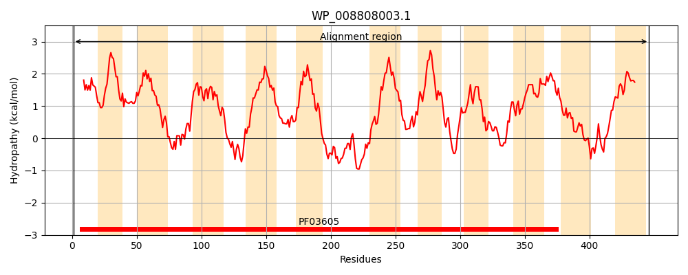
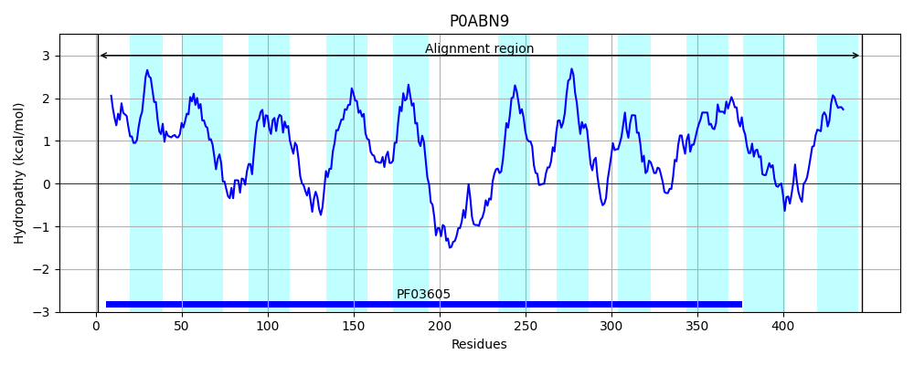
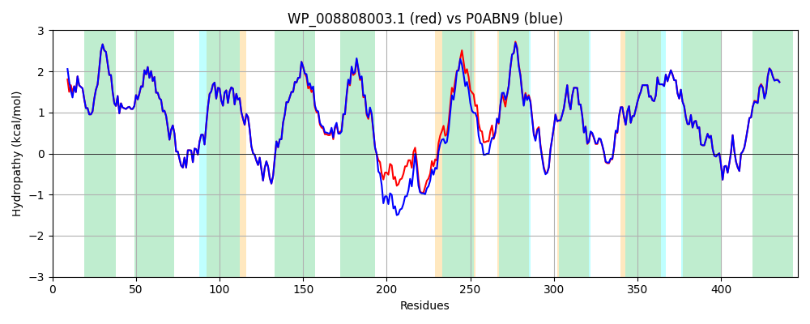

Hit Accession: P0ABN9
Hit TCID: 2.A.13.1.2
Hit Description: gnl|BL_ORD_ID|8720 gnl|TC-DB|P0ABN9|2.A.13.1.2 Anaerobic C4-dicarboxylate transporter dcuB - Escherichia coli.
Mach Len: 446
e:0.000000
Query TMS Count : 11
Hit TMS Count: 11
TMS-Overlap Score: 12.100000
Predicted Substrates:CHEBI:15595;malate(2-), CHEBI:30031;succinate(2-), CHEBI:42511;fumarate(2-)
BLAST Alignment:
Score: 2138 , Bit scores: 828 bits, E-value: 0.0e+00, Alignment length: 446, Percentage identity: 95
Query: 1 MEFAIQLIIILICLFYGARKGGIALGLLGGIGLVILVFVFHLQPGKPPVDVMLVIIAVVAASATLQASGGLDVMLQIAEKLLRRNPKYVSIVAPFVTCTLTILCGTGHVVYTILPIIYDVAIKNNIRPERPMAASSIGAQMGIIASPVSVAVVSLVAMLGNFTFNGKHLEFLDLLAITIPSTLLGILAIGIFSWFRGKDLDKDEAFQAFIAVPENRHYVYGDTATLLDKKLPTSNWIAMWIFLASIAVVALLGAFSELRPAFDGKPLSMVLVIQMFMLLSGALIIIITKTNPASISKNEVFRSGMIAIVAVYGIAWMAETMFGAHMTEIKGVLGEMVKEYPWAYAIVLLLVSKFVNSQAAALAAIVPVALAIGVDPAYIVASAPACYGYYILPTYPSDLAAIQFDRSGTTHIGRFVINHSFILPGLIGVGVSCVFGWVFAAMYGFL 446
M F IQLIIILICLFYGARKGGIALGLLGGIGLVILVFVFHLQPGKPPVDVMLVIIAVVAASATLQASGGLDVMLQIAEKLLRRNPKYVSIVAPFVTCTLTILCGTGHVVYTILPIIYDVAIKNNIRPERPMAASSIGAQMGIIASPVSVAVVSLVAMLGN TF+G+HLEFLDLLAITIPSTL+GILAIGIFSWFRGKDLDKDE FQ FI+VPENR YVYGDTATLLDKKLP SNW+AMWIFL +IAVVALLGA S+LRP+F GKPLSMVLVIQMFMLL+GALIII+TKTNPASISKNEVFRSGMIAIVAVYGIAWMAETMFGAHM+EI+GVLGEMVKEYPWAYAIVLLLVSKFVNSQAAALAAIVPVALAIGVDPAYIVASAPACYGYYILPTYPSDLAAIQFDRSGTTHIGRFVINHSFILPGLIGV VSCVFGW+FAAMYGFL
Sbjct: 1 MLFTIQLIIILICLFYGARKGGIALGLLGGIGLVILVFVFHLQPGKPPVDVMLVIIAVVAASATLQASGGLDVMLQIAEKLLRRNPKYVSIVAPFVTCTLTILCGTGHVVYTILPIIYDVAIKNNIRPERPMAASSIGAQMGIIASPVSVAVVSLVAMLGNVTFDGRHLEFLDLLAITIPSTLIGILAIGIFSWFRGKDLDKDEEFQKFISVPENREYVYGDTATLLDKKLPKSNWLAMWIFLGAIAVVALLGADSDLRPSFGGKPLSMVLVIQMFMLLTGALIIILTKTNPASISKNEVFRSGMIAIVAVYGIAWMAETMFGAHMSEIQGVLGEMVKEYPWAYAIVLLLVSKFVNSQAAALAAIVPVALAIGVDPAYIVASAPACYGYYILPTYPSDLAAIQFDRSGTTHIGRFVINHSFILPGLIGVSVSCVFGWIFAAMYGFL 446 | Protein Hydropathy Plots: |
|---|
|  |  |
Pairwise Alignment-Hydropathy Plot:
|
|---|
|  |